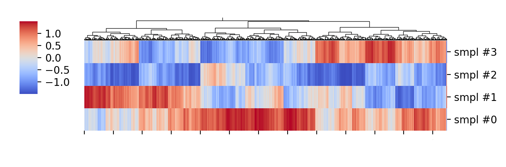

As I started to write this post I was at a conference where I saw some RNA-seq data; what I did not see was actual analysis of the data, just some clustering and then a zoom into the subset of “most interesting genes”. I can claim to have looked at some RNA-seq data and I know it is noisy, it looks like a snapshot of TV static except that instead of black and white people make it red-black-green (or red-white-blue, or your favorite ugly combination of colors). That is why standard analyses often use linear models (or the slightly more useful Generalized Linear Models, with some more introduction here). I have my issues with linear models which I will probably talk about in a different post, but they do allow testing for significance (also something I have issues with, but that I guess I won’t even discuss in writing). Clustering, on the other hand, just clusters; it may be useful to get organize very broad patterns in the data, but with no underlying model other than some simple distance-based metric it is not a reliable method to find relevant gene modules, much less to find specific genes.
{kind=link}
{kind=link}
Possibly there’s an elegant demonstration of the relationship between some parametric statistical distribution and the resulting clustering based on Euclidean-distances; I’m not going as far as to try to derive anything analytically. Instead I will give an example.
Given 4 samples and the expression of ~10 thousand genes, you can cluster them based on their average distance, the gene expression values are often centered at the gene (i.e. row) mean and scaled by their variance – if you are using R’s heatmap function it is doing that by default (I did that using Python’s Seaborn, although I’m more of a matplotlib person). The resulting heatmap is shown below:

Without going into the meaning of the genes and sample labels, we can see some nicely formed clusters, and if we focus on the leftmost third, approximately, there are some clear non-overlapping clusters between samples:

This could indicate that there are genetic networks important for the function of interest, and looking into those maybe there are specific genes with predicted functions that could be tested for their functions.
The problem with this is the actual data is simply \( y \sim \mathcal{N}(0, 1)\), a \(4 \times 10000 \) array of independent gaussian random draws, i.e. it is the best white noise no money can buy (but NumPy can generate for free with a single Python command) plotted in some less ugly “coolwarm” colormap. The data before clustering, in the order the values were originally drawn, is shown below:
So, I am not arguing cluster analysis is useless or that microarray or RNA-seq data are white noise, but I am showing that spurious patterns can be picked out of completely random data. That is more our fault than anything else, we expect to see patterns in our experiments based on our prior knowledge and our hypotheses; if we are not equipped to formulate and test those hypotheses properly only garbage will come out of these very expensive experiments.
Nevertheless, the bigger problem is (hopefully) not drawing conclusions that can easily be shown to have no formal basis, but with methods that seem formal but are lacking in very serious ways; we need to see through those too, but often the ideas precede the ability to test them properly. I’m probably waxing too philosophical at this point, so I’m going to leave it at until I find more concrete example of that for a next post.
-- caetano,
September 30, 2018